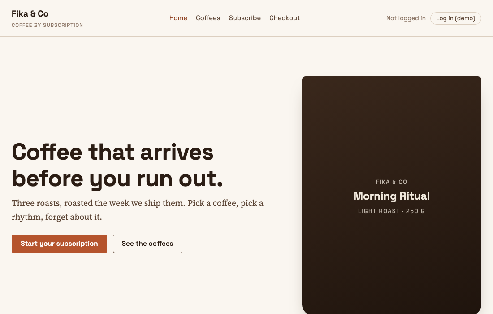

Before you start
Four things to set up. All of them are free. Do them in this order.
Part A Create a Tag Manager container
Go to tagmanager.google.com and log in with a Google account. Any Gmail account works.
Click the blue button Create Account.
Under Account Name, type your own name. Under Country, choose your country.
Under Container name, type
Fika practice shop. Under Target platform, choose Web.Click Create. Accept the terms of service.
A window opens with two boxes of code. This is your snippet. You do not need it yet. Close the window.
Look at the top right of the page. You will see an ID that starts with
GTM-. That is your container ID. Write it down.
Part B Create a Google Analytics property
A property is your Google Analytics account for one website. It has an ID that starts with G-.
Go to analytics.google.com and log in with the same Google account.
If you have never used Google Analytics, click Start measuring. If you have, click the gear icon Admin at the bottom left, then Create, then Property.
Under Property name, type
Fika practice shop. Choose your time zone and currency. Click Next.Answer the questions about your business any way you like. Click Create.
When it asks how you want to collect data, choose Web.
Under Website URL, type
yourname.github.io, using the GitHub user name you will choose in part D. Under Stream name, typeFika practice shop. Click Create stream.A page opens with the details of the stream. At the top right you will see a Measurement ID that starts with
G-. Write it down.
Part C Connect Tag Manager to Google Analytics
You do this with one tag, called the Google tag. It runs on every page and sends every page view to your property. All the other tags you build later send their data to the same place.
Go back to tagmanager.google.com and open your container.
In the menu on the left, click Tags. Then click the blue button New.
Click on the big box called Tag Configuration. A list of tag types opens. Choose Google tag.
In the field Tag ID, paste your Measurement ID from part B, the one that starts with
G-.Click on the big box called Triggering. Choose Initialization - All Pages.
At the top left, where it says Untitled Tag, type the name
Google tag - GA4.Click Save at the top right.
Part D Put the folder online
Tag Manager's test tool can only open pages that are on the internet, not files on your computer. GitHub Pages is a free way to put a folder of web pages online.
Go to github.com and create an account. Choose a short user name. It becomes part of your web address.
Click the + at the top right and choose New repository.
Under Repository name, type exactly
yourname.github.io, with your user name instead of yourname. Leave it Public. Tick Add a README file. Click Create repository.On the page that opens, click the button Add file, then Upload files.
Open the folder on your computer that contains
gtm-real-site. Drag the wholegtm-real-sitefolder into the browser window, onto the box that says Drag files here.Wait until every file is listed. Then click the green button Commit changes at the bottom.
Wait two minutes. Then open this address in a new tab, with your user name instead of yourname:
https://yourname.github.io/gtm-real-site/site/index.htmlYou should see the practice shop. If you see a "404" page, wait another minute and reload.

What you have now
- A Tag Manager container with an ID like
GTM-ABC1234. - A Google Analytics property with a Measurement ID like
G-ABC123XYZ. - One tag in the container,
Google tag - GA4, that connects the two. - The practice shop online at
https://yourname.github.io/gtm-real-site/site/index.html.
If it does not work
- The shop shows a 404 page. Check the repository name. It must be exactly
yourname.github.io. Then check that the foldergtm-real-siteis at the top of the repository, not inside another folder. - GitHub says the upload is too big. Upload the
sitefolder and the other files in two rounds.
create google tag manager account,
create ga4 property,
github pages upload files.
The practice shop
The exercises happen on these five pages. Each link opens in a new tab.
- 1Home pagecta_click, login
- 2All coffeesview_item_list, select_item
- 3One coffeeview_item, add_to_cart
- 4Checkoutbegin_checkout, purchase
- 5Subscribe formgenerate_lead
At the bottom of every shop page there is a grey line that says Developer view. Click it to see the dataLayer and which containers are running.